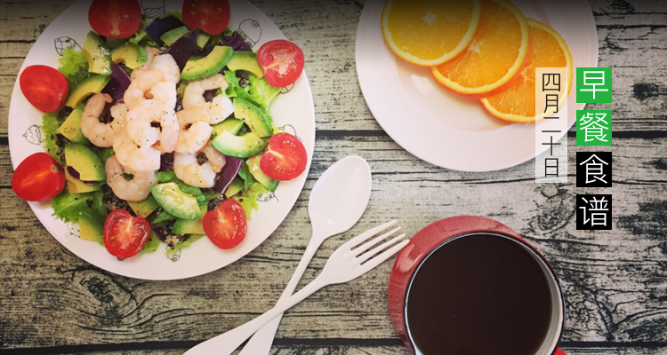
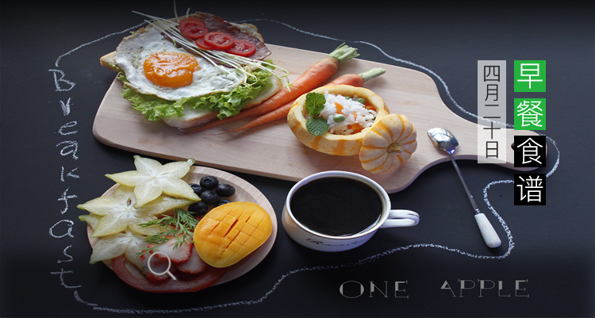
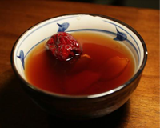
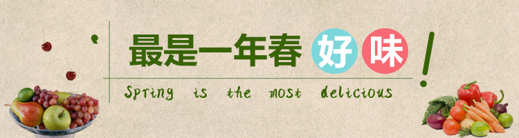
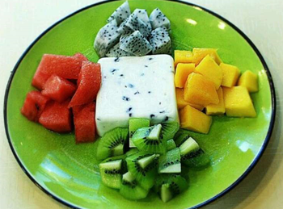
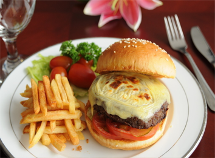

今日佳作
美食养生
美食视频
今日佳作
美食知识
咳嗽时要忌口这些食物不能吃
咳嗽时不能吃什么？有些食物是会影响到药效的， 甚至是导致...
生活常识
18719浏览
29评论

常吃生姜竟然有这三大功效
生姜是日常生活中十分常见的调料，虽然作为调味 料，生姜出...
健康养生
18719浏览
29评论
人气美食家
美食杰
南北小吃
美食绘梦师
竹马与他

精选专题
精彩生活圈
田田_KD3f
延边朝鲜族自治州
水果拼盘

刚刚-秀厨艺
652
579
jame_Kgyp
美国
汉堡薯条

刚刚-秀厨艺
789
454
学做菜
商城
生活圈
我的